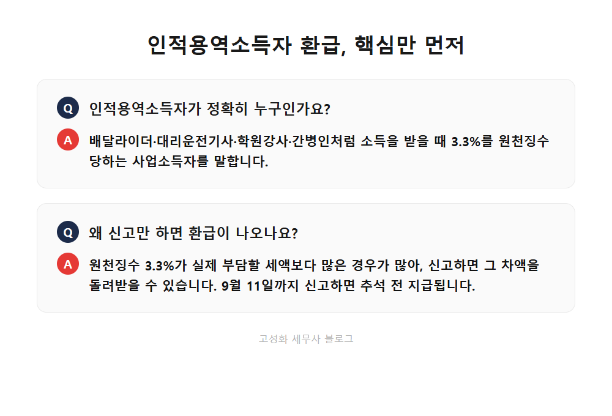
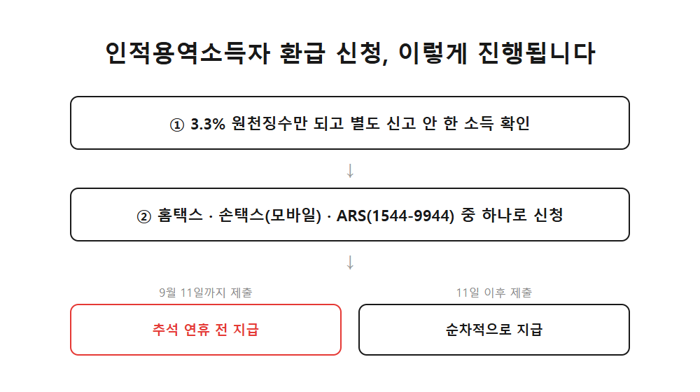
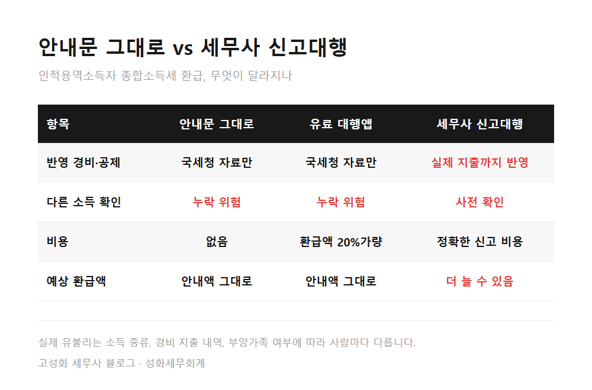

← 세무칼럼 목록
종합소득세·프리랜서

배달라이더·학원강사라면 9월 11일까지 확인하세요, 추석 전 세금 환급받는 법
배달 일을 하시는 분, 학원 강사, 대리운전 기사, 간병인처럼 소득을 받을 때마다 3.3%씩 떼이고 나머지만 손에 쥐어보신 분들 많으실 겁니다. "어차피 세금 뗐으니 끝난 거겠지" 하고 별도로 신고를 안 해온 경우가 대부분인데요. 사실은 이 3.3% 원천징수액이 실제 내야 할 세금보다 많아서, 신고만 하면 차액을 돌려받을 수 있는 분들이 적지 않습니다. 정부가 이번 추석 민생안정대책에서 이런 분들을 위한 환급 일정을 발표해서, 오늘은 이 내용을 정리해드립니다.
이 글에서 다루는 내용
- 인적용역소득자 환급, 정확히 무엇인가요
- 지금 신고하면 언제 돈이 들어오나요
- 안내문 금액 그대로 신고하면, 손해일 수 있습니다
한눈에 보기



자주 묻는 질문
9월 11일을 넘기면 환급을 아예 못 받나요?
안내문에 나온 금액 그대로 신고하면 되나요?
유료 환급 앱과 세무사 신고대행은 뭐가 다른가요?
정리하면
배달라이더, 학원 강사, 대리운전 기사처럼 3.3% 원천징수만 당하고 별도 신고를 안 해온 분이라면, 지금이 세금을 돌려받을 좋은 기회입니다. 9월 11일까지 신고하면 추석 전에 환급받으실 수 있고, 이 시점을 넘겨도 순차적으로 지급되니 너무 걱정하지 않으셔도 됩니다. 다만 국세청 안내문에 적힌 금액이 최소한의 금액일 뿐이라는 점은 꼭 기억해두세요. 실제 경비나 다른 소득이 있는데 놓치고 계신 건 아닌지, 저희 사무실의 종합소득세 신고대행을 통해 한 번 정확히 확인받아 보시길 권해드립니다.
본문 전체와 근거 조문은 블로그에서 확인하실 수 있습니다.